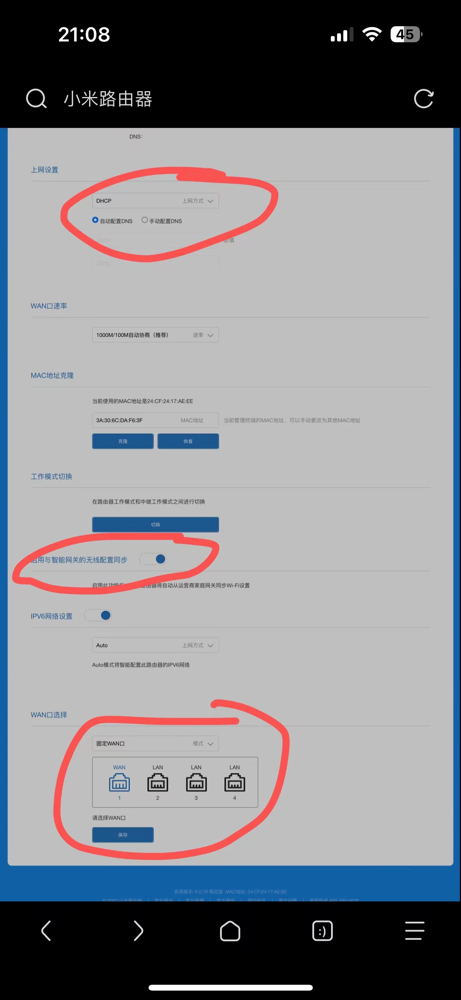

寝室的校园网一直差强人意——只有100Mbps的下行，20左右的上行，同时还有神秘的VLAN隔离，没有办法和舍友愉快的局域网联机。我不怎么打游戏，但是最近下载需求疯涨，而且连b站打开都卡，我实在忍无可忍，确实有必要动起手来简单改造一下网络环境。
需求及环境
寝室四人间，上床下桌，每个人桌下都有RJ45网口，只需要一根六类线，即可轻松接入校园网。于是我激情下单WR30U并准备好基本固件，恰好笔者有一块废旧硬盘，将曾经的电视盒子刷成轻nas也可接入局域网中供舍友使用。
准备如下固件:
按照说明选择对应固件。WR30U是mtk芯片，自然应该进入mtk目录下寻求
刷入OpenWrt
解锁ssh
首先给WR30U上电，电脑接入路由器后访问192.168.31.1，在后台界面进入到上网设置，将上网方式设置为DHCP，DNS设置为自动,并开启与智能网关的无线同步，最后固定一个wan口。

然后用网线将路由器和电脑连接，此时电脑接入互联网（可以用wifi，也可以手机usb热点直连），然后在网络和共享中心中，选择接入互联网的适配器（比如wifi），右键-属性，选择共享，勾选允许其他网络用户通过此计算机的Internet连接来连接选项，然后选择接入路由网线接入的网卡，本文中是以太网6。
要将网线接入到事先固定的wan口中，此时电脑作为一个网关，会将路由器分配一个ip地址，此时您应该已经无法访问您的路由器管理界面
共享网络后，路由器将走我们的电脑接入互联网，此时路由器应该亮起两个蓝色指示灯。
然后准备好一个python环境，如果没有crypto库，需要执行pip install pycryptodome安装，然后运行server_emulator.py脚本。
期间需要按任意键才能继续，出现finish即完成，可以退出。
插曲一:我电脑为一轻薄本，只能使用绿联扩展坞接入rj45，在这个过程中发现无论如何都无法将笔记本作为网关让路由器接入互联网，恰巧舍友有一y9000p。将舍友驱赶至床上让其玩金铲铲，再次尝试，发现问题迅速得到解决（后续这个拓展坞也没办法拨号，错误代码是651，因此有条件最好用笔记本自带的网口来做）
路由器不要断电，将电脑接入路由器(lan口或wifi接入)，然后输入ssh root@192.168.31.1。
刷入uboot
拿到shell之后，可以cat /proc/mtd 查看mtd分配情况，如果需要备份，可以dd if=/dev/mtdX of=/path/to/backup/file.img bs=512进行备份。
例如，备份mtd0到/root/mtd0_backup.img，则可以输入dd if=/dev/mtd0 of=/root/mtd0_backup.img bs=512。
恢复时只需要dd if=/path/to/backup/file.img of=/dev/mtdX bs=512即可。
然后用scp将uboot固件传到路由器的/tmp路径下。
然后执行 mtd write <your image name> /dev/mtd5 即可
刷入openwrt
将路由器断电，按住reset不放，接入电源，等待黄色灯闪烁后松开进入uboot，电脑使用网线和wr30u实现准备好的wan口连接，设置以太网为静态，IP地址为192.168.1.2，子网掩码为255.255.255.0，网关为192.168.1.1，首选DNS为192.168.1.1，保存。
然后上传准备好的bleachwrt固件即可。
配置openwrt
bleachwrt的账号是admin密码是password，默认网关是192.168.1.1，默认ssid是bleachwrt。进入管理界面后选择网络->接口。
openwrt将虚拟化若干虚拟接口，绑定到物理接口上，wan口绑定在wan口上（有的路由器是eth0），其余通过br-lan网桥连在统一的lan口上。
我本次使用双线多播，因此wan和wan6已经够了，如果需要更多wan口，可以进到br-lan中解绑需要的lan口。
然后修改两个wan口，协议都使用pppOe(因为校园网支持pppoe认证)，输入账号密码即可接入校园网，此外，将wan口的防火墙协议配置在wan口对应规则下，方便后续管理。
有的寝室没有网口，可以直接无线扩展，但需要进入认证界面，可以使用github上对应的锐捷脚本进行认证。深澜认证脚本
确认能够上网后，选择多线多拨。可以按照需求进行配置(虚拟WAN口数=拨号数量)。比如我们用了两个账号登录，然后每个虚拟WAN口数为5，那么最后每个人在校园网终端都会有五台设备接入。如果勾选了使用旧的macvlan创建方式，可以自动配置好负载均衡。
也可以手动配置负载均衡。
进入到负载均衡中，需要依次配置接口``成员``配置``规则。跟踪的ip可以选dns服务器地址，或者简单粗暴www.baidu.com。
至此，利用多播上网，可以叠加带宽。
此外，bleachwrt有PassWall可以配置，可以随便配置配置来启动你的盾构机让全寝出国（
也可以安装Turbo ACC 网络加速来做流量分载和BBR拥塞控制
后记
多播之后没办法访问学校内部网站了，比如教务处，图书馆都无法访问，http报文是DNS_PROBE_FINISHED_NXDOMAIN，于是便连接回校园网nslookup jwts.hit.edu.cn 发现有且仅有ipv6地址，初步考虑手动配置dns服务器，然而没找到配置选项。解决方法是进入到网络->DHCP/DNS下，将重绑定保护去除勾选即可。因为学校的dns服务器和内部网站都是10段内网，这玩意貌似用dnsmasq过滤掉内网解析。
插曲二：当你做的都对但事情仍无进展时，少内耗，多骂骂外面的环境，心态才会正常。
第二次遇到问题是在拨号上，最初仍然考虑用锐捷脚本来绕认证，然后被告知直接pppoe就行，结果拨号从来不成功，郁闷至极趁舍友都睡下之际开始用电脑尝试拨号，结果651发现根本拨不通！考虑到又是拓展坞的问题，用y9000p尝试拨号，也651，锤醒隔壁寝室发现正常上网，于是第二天后勤报修，后勤响应巨快无比，得知先辈层抱怨信号不好，学校特意在我寝安装一便携ap。
结果检修后发现只有左侧两lan口能使用。颇为滑稽。
世界上解决问题最有效的办法就是解决制造问题的人——约瑟夫·斯大林